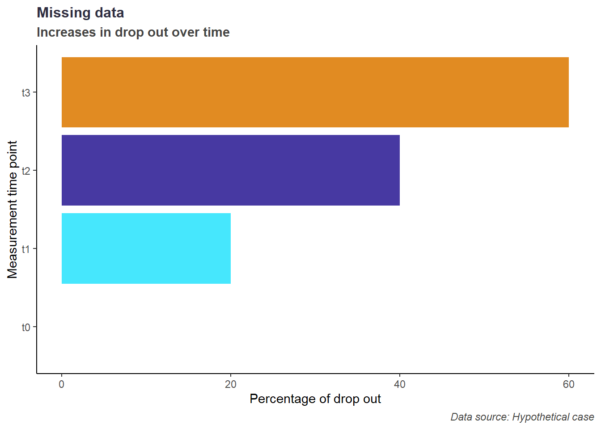
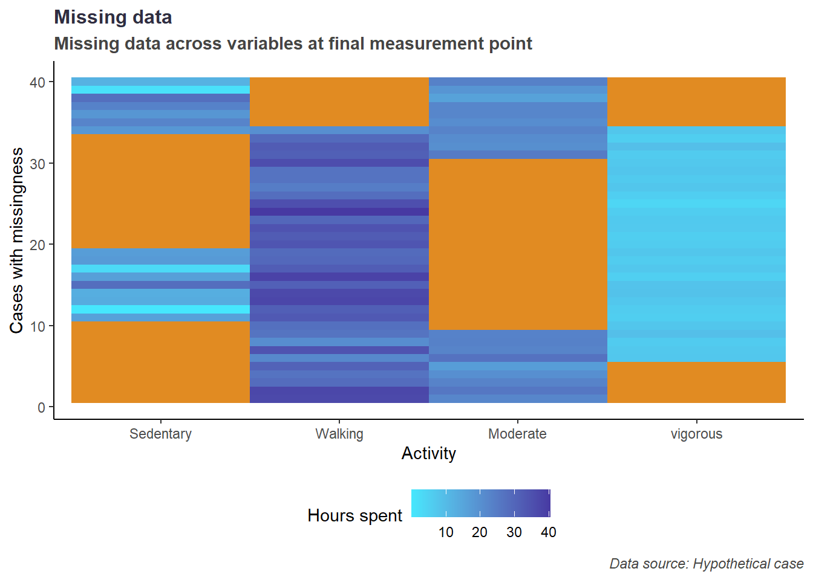
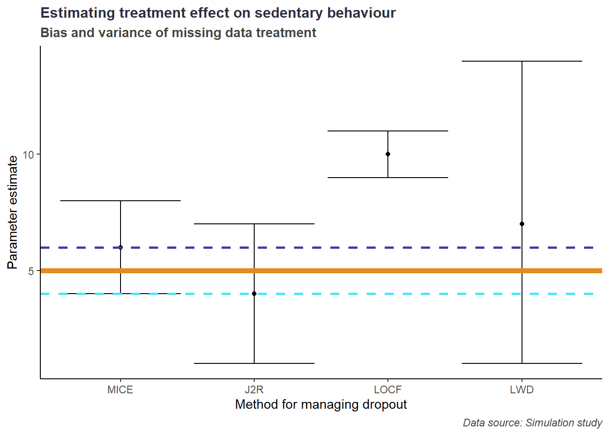
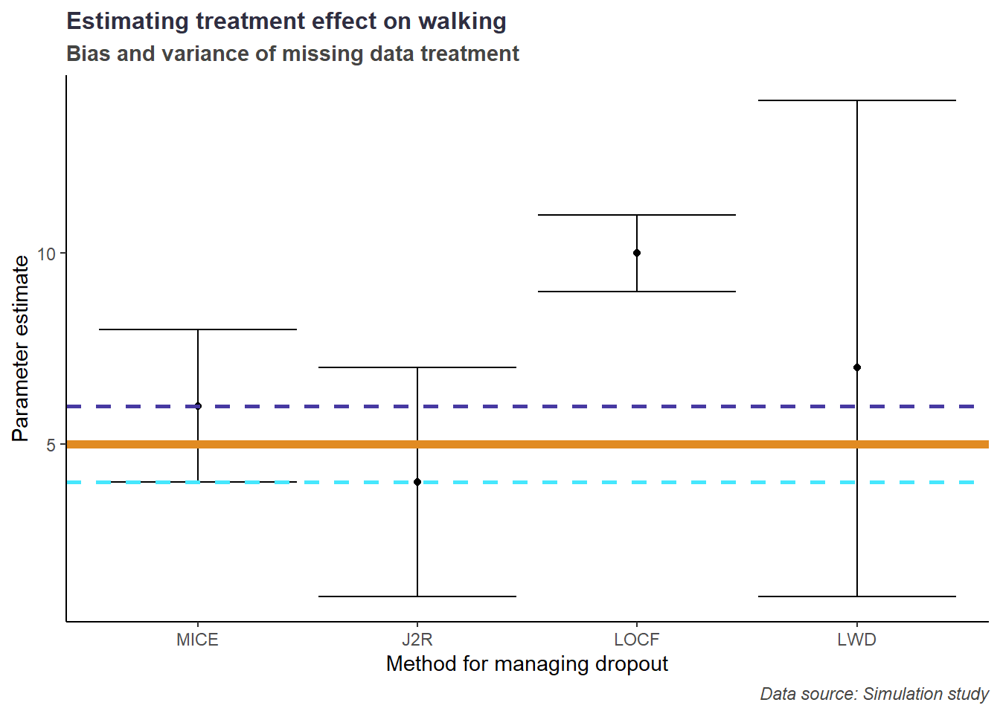
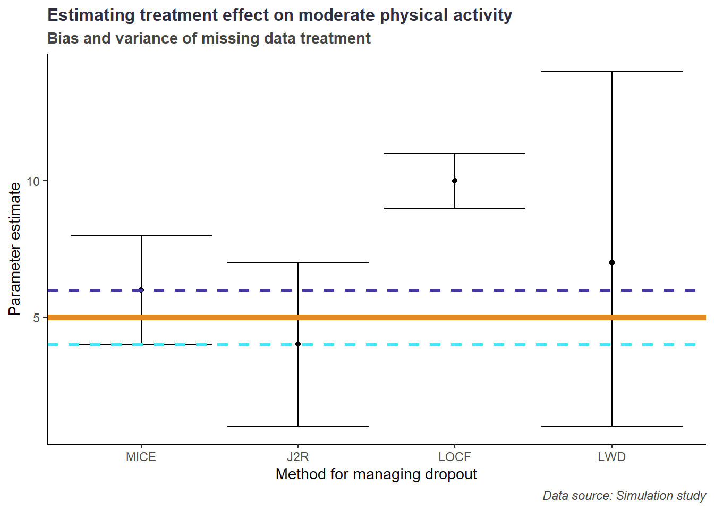
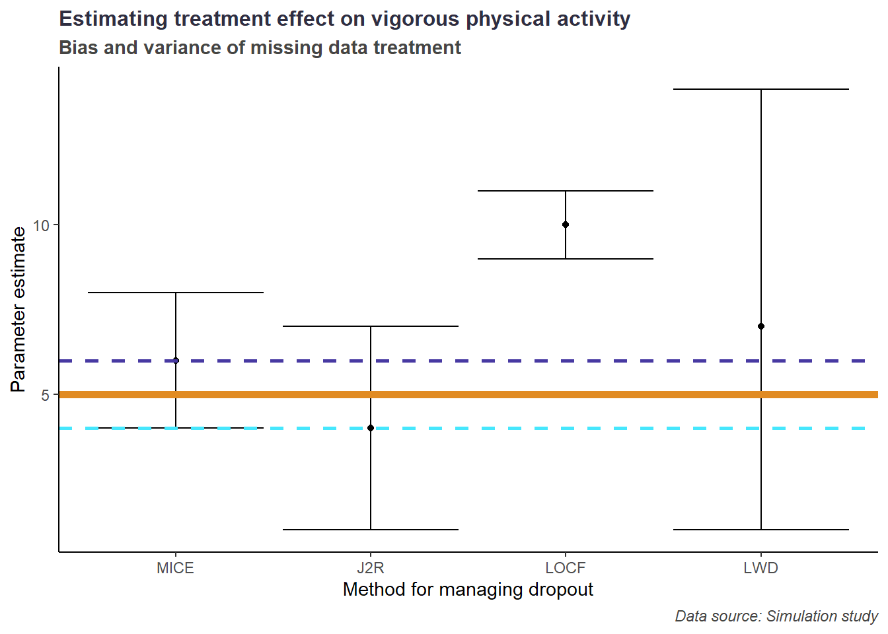

Impute using MICE for precision.
Impute using J2R to be conservative.
Leverage open source tools to co-create and cascade.
Managing dropout in mHealth interventions
Vinayak Anand Kumar 1, 
Luisa Korte2 Claas Oltmann2 Prof. Dr. Margrit Schreier1 Prof. Dr. Sonia Lippke1
1 School of Business, Social & Decision Sciences | Constructor University
2 Bremen | apprevent GmbH
The drop out problem


Data management strategies




An Open approach to handling data
Co-create

Cascade


Health CASCADE is a Marie Skłodowska-Curie Innovative Training Network funded by the European Union’s Horizon 2020 research and innovation programme under Marie Skłodowska-Curie grant agreement n° 956501